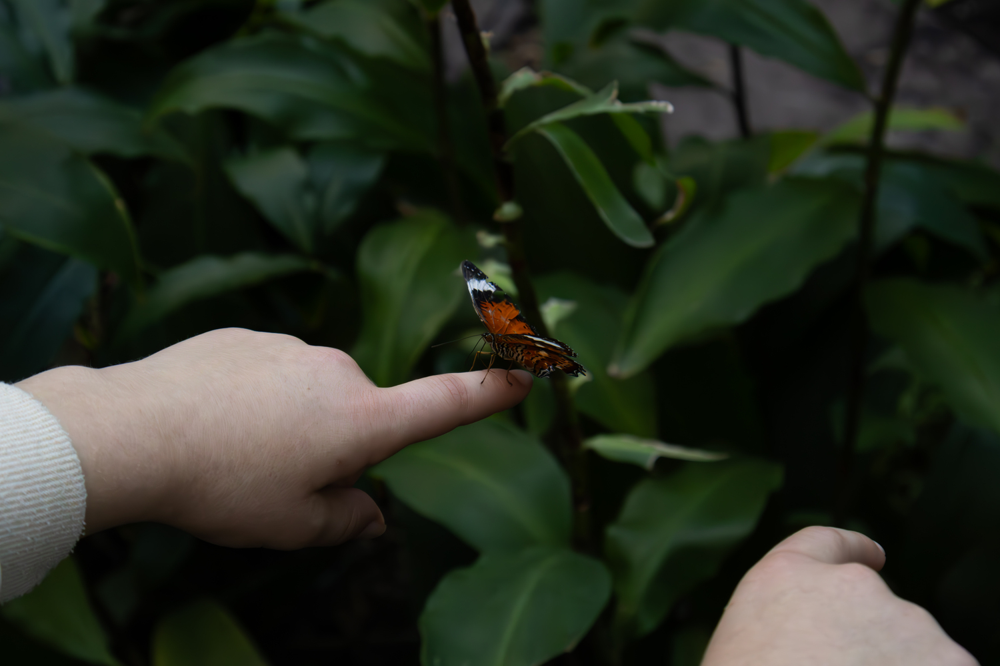
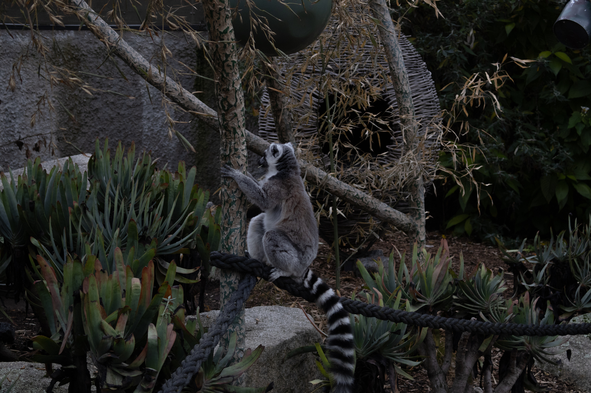
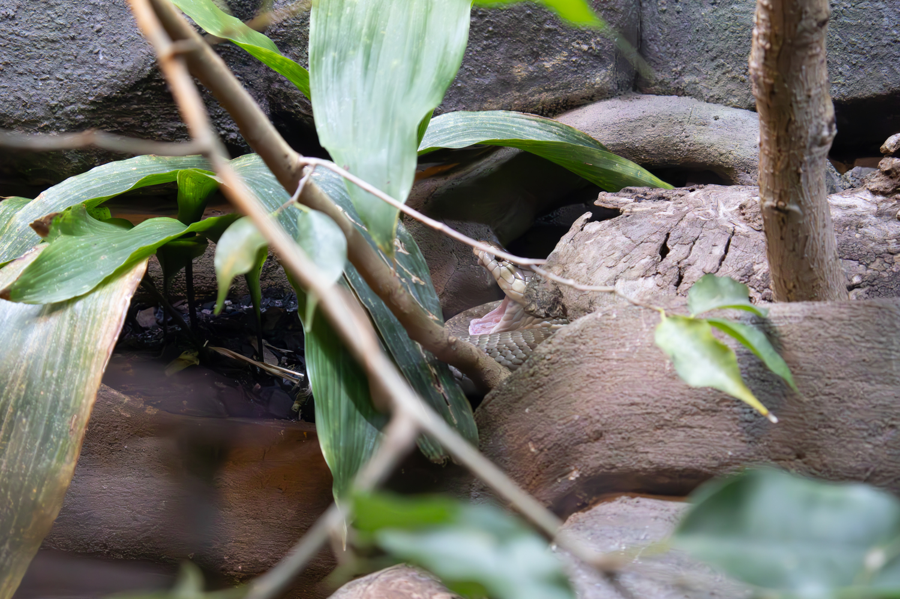
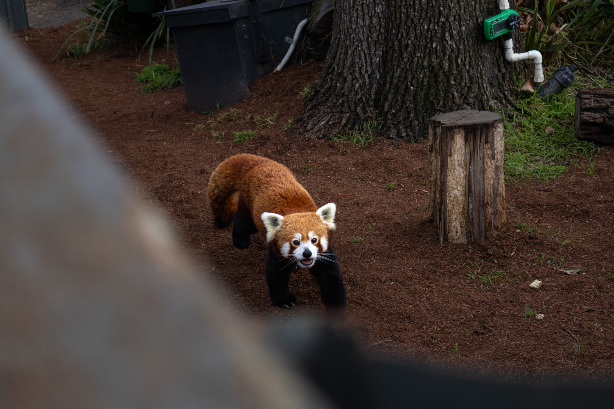

Melbourne Zoo
At the start of 2024, I went to the Melbourne Zoo with one of my friends. This was one of my first outings with my new body. Unfortunately, I only had the one lens at the time, and its reach was nowhere near enough for wildlife photography. I'd love to go back and rephotograph the zoo with my new lens. The lack of reach from my 18-45mm kit lens didn't ruin the fun, and I still got some amazing photos!